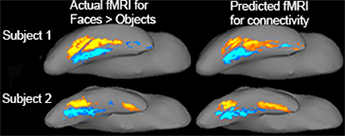
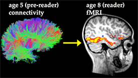

Neuroimaging research has revealed the functional organization of the human brain in great detail. A series of short fMRI scans can reveal numerous brain regions, each with a distinct role in human behavior (e.g. regions that specialize in perceiving faces, or reading printed words, or processing language). Each of these regions presumably has its own unique connections with other brain regions (i.e. its connectivity fingerprint) that defines its unique function. We use connectivity fingerprints to understand the physical mechanisms of functional organization in the brain.
What are the physical mechanisms of brain function and behavior in adults?
We use functional MRI to map neural function in each individual, and we study the way that these brain areas are connected to one another using diffusion imaging. We then build computational models of this data and predict each individual’s nuanced neural activity from that individual’s connectivity scan. This method tells us about the unique connectivity fingerprints for neural function. Our previous experiments provide some of the strongest empirical evidence to date for the hypothesized precise and fine-grained relationship between connectivity and function in the adult human brain. Ongoing work continues to explore connectivity-function relationships in numerous cognitive domains (e.g. language, attention, emotional processing), and relates these brain measures to behavior.
"Anatomical connectivity patterns predict face selectivity in the fusiform gyrus." (Saygin et al., 2012) Nature Neuroscience.
"Structural Connectivity Fingerprints Predict Cortical Selectivity for Multiple Visual Categories across Cortex." (Osher et al., 2015) Cerebral Cortex.
Ongoing work also explores subcortical fingerprints, e.g. amygdala subnuclei
"High-resolution magnetic resonance imaging reveals nuclei of the human amygdala: manual segmentation to automatic atlas." (Saygin et al., 2017) NeuroImage.
"Connectivity-based segmentation of human amygdala nuclei using probabilistic tractography." (Saygin et al., 2011) NeuroImage.
How does the functional organization of the brain get wired up in development and how does it change with maturation vs. experience?

We use the method of connectivity fingerprinting to understand how brain areas become selective for specific types of mental function. We have so far found that brain connectivity at age 5, before a child learns to read, predicts the precise location of where the “visual word form area” will arise in that same child when s/he can read, at age 7, and that it may also predict dyslexia even before the child can read. Current work in our lab explores the differentiation of connectivity patterns in very young children including neonates (since structural scans can be acquired while the child is asleep). We are then following-up with these children later in life to see if the early brain architecture can predict neural activity and behavior when they are older (after they can participate in functional MRI). We also study older children before and after they acquire new skills, e.g. reading, mathematics.
"Connectivity precedes function in the development of the visual word form area." (Saygin et al., 2016) Nature Neuroscience.
"Structural Connectivity of the Developing Human Amygdala." (Saygin et al., 2015) PlosOne.
"Tracking the Roots of Reading Ability: White Matter Volume and Integrity Correlate with Phonological Awareness in Prereading and Early-Reading Kindergarten Children." (Saygin et al., 2013) Journal of Neuroscience.
Can early neural markers predict later clinical outcome? How do they shape or constrain the plasticity induced by adverse experience?
We investigate the neural markers that enable early diagnosis of clinical and developmental disorders, and how atypical or adverse experience can change the connectional and functional architecture of the brain.
Our previous work showed that pre-reading white matter measures were better predictors of future reading fluency and dyslexia than pre-reading behavioral predictors of reading outcome.
These MRI-based biomarkers may be used to develop interventions even before a child learns to read. We are currently exploring these biomarkers and identifying the static and dynamic changes that occur with learning to read in typical children, and with interventions in children with dyslexia.
Our previous work on social anxiety disorder showed that pre‑treatment neural measures predict subsequent treatment outcome in these patients (i.e. early neural markers predict how well a patient will respond to treatment).
We are applying a similar type of multimodal approach to study and predict brain injury (and potentially treatment response), in both adults and children by scanning them before and after a season of high-contact sports.
"Tracking the Roots of Reading Ability: White Matter Volume and Integrity Correlate with Phonological Awareness in Prereading and Early-Reading Kindergarten Children." (Saygin et al., 2013) Journal of Neuroscience.
"Predicting Treatment Response in Social Anxiety Disorder From Functional Magnetic Resonance Imaging." (Doehrmann et al., 2012) Archives of General Psychiatry.
"Brain connectomics predict response to treatment in social anxiety disorder." (Whitfield-Gabrieli et al., 2015) Molecular Psychiatry.